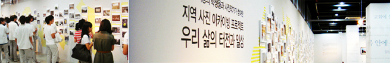
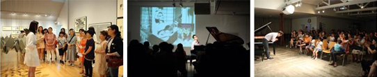
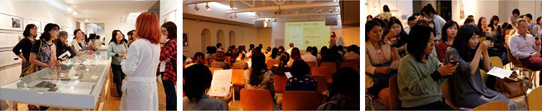
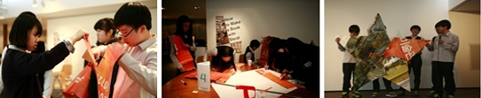
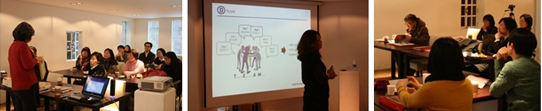

PROGRAM
지역연계 프로그램
사진, 패션, 디자인, 컬렉션의 카테고리를 기반으로 라이프스타일을 제시하는 대림미술관의 명성에 걸맞게 우리 미술관은 특화된 사진 교육 프로그램과 사진 교재를 개발, 실행하고 있습니다. 이를 바탕으로 대림은 지자체 실행 미술행사 및 국내외 전시와 결합한 지역연계 프로젝트를 2010년부터 실행하였으며, 2012년에는 앞서 진행되었던 프로젝트 경험을 바탕으로 미술관과 교육 프로그램, 그리고 지역민들의 예술적 만남을 주도할 대림미술관만의 특화된 지역연계 프로젝트“DA+E(데이트, Daelim Museum Art + Education project)”를 브랜드로 개발하였습니다.
데이트 DA+E
대림미술관 지역연계 프로그램 “데이트 DA+E 프로젝트”
설레고 즐거운 데이트를 통해서, 대림미술관이 여러분에게 좋은 이웃으로 다가가려 합니다.
십여 년 동안 많은 분들에게 문화와 예술을 즐길 수 있는 전시와 프로그램을 제공해 온 대림미술관이 여러분들에게 보다 친근한 이웃으로 다가가고자 “데이트 프로젝트”를 시작합니다.
2013년 11월까지 종로구 통의동 일대에서 ‘미술관에 마실가기’라는 컨셉으로 진행될 데이트 프로젝트에 여러분들의 많은 관심과 호응 부탁 드립니다.

어떻게?
- 매달 월요일 (9월까지) 지역 단체를 위한 특별한 마실데이가 진행됩니다. 미술관으로 마실 오세요! [월요마실데이]
- 3월부터 10월까지, 지역의 청소년, 대학생, 직장인들과 미술관, 작가가 함께 만드는 즐거운 배움이 일어납니다.
[러닝, 런닝 (Learning, Running)]
- 2014년 2월 우리 손으로 우리 동네를 만드는 흥미진진한 전시가 우리 동네에서 펼쳐집니다.
월요마실데이
2013 진행된 월요마실데이
대림미술관 휴관일인 월요일, 지역 구성원을 위한 특별한 마실데이가 진행됩니다.
지역의 대학생, 직장인, 주민분들과 미술관 에듀케이터가 함께 하는 대림미술관에서의 특별한 월요일을 경험해 보세요.
대상 : 미술관 인근 지역 주민들로 구성된 개인 또는 단체
내용 : 도슨트와 함께 하는 전시 관람 + 미술관 특별 프로그램
※ 특별 프로그램은 참가자분들의 특성에 맞게 기획됩니다.
[2013 진행된 월요마실데이 모습]

러닝런닝
러닝, 런닝 (Learning, Running)
여러분의 삶의 터전이자 일터이며 대림미술관이 위치해 있는 ‘우리 동네’가 얼마나 아름답고, 소중한 곳인가를 지역 주민과 중고등학생, 대림미술관 교육팀, 아티스트가 새롭게 조명하고자 준비한 프로그램입니다. 동네 구석구석을 돌아보면서 지역의 풍경, 사람, 그리고 이야기를 사진과 작품으로 담아 2013년 가을 전시로 선보일 이 프로그램에 많은 응원과 관심 부탁드립니다.

[돗(Dot)자리 프로젝트]
“업사이클링에 대하여 배우기 - 돗자리 제작하기 - 프로젝트에 활용하기 - 전시하기”
2011년 겨울, 통인시장을 미술관으로 바꾸어 놓았던 대형 현수막을 기억하시나요?
지역의 학생들이 찍은 지역의 아름다운 모습이 담긴 대형 현수막이 프로젝트에 참여하는 학생들과 주민들이 앉아 이야기 할 수 있는 돗자리로 재탄생됩니다! 디자이너와 학생들이 만들 돗자리는 주민들과 학생들의 만남의 장이자 쉼터가 될 것입니다.
교사워크숍
교사워크숍
2013년 2월. 지속 가능한 프로젝트 개발을 위해 대림미술관 에듀케이터와 프로젝트 대상지 중,고등학교 교사들이 함께 사전 워크숍을 진행하였습니다.
미술관과 지역의 아이들, 학교가 함께 소통하고 지역에서 창의적인 활동을 할 수는 여러 가지 아이디어를 공유함으로써 보다 풍성한 프로그램으로 학생들을 만날 수 있었습니다.

[프로그램]
커뮤니티아트&문화예술교육 사례 강의 (강사 윤현옥)
대림미술관 지역연계 프로젝트 소개
사진교육과 지역탐사의 결합에 대한 논의
학교 연계 프로그램 아이디어 공유